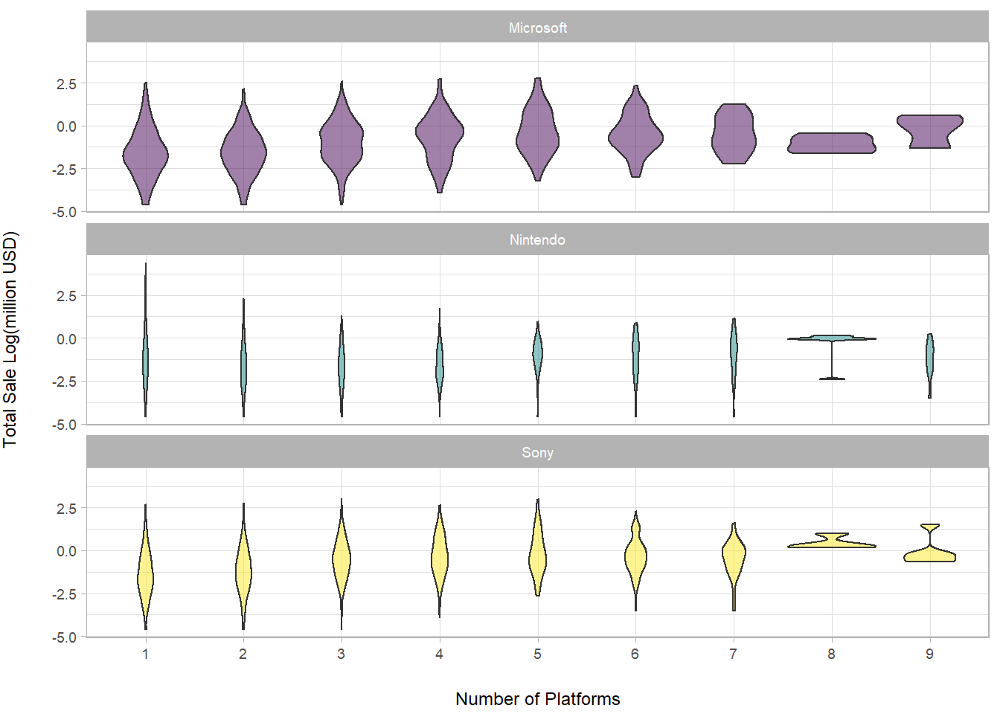
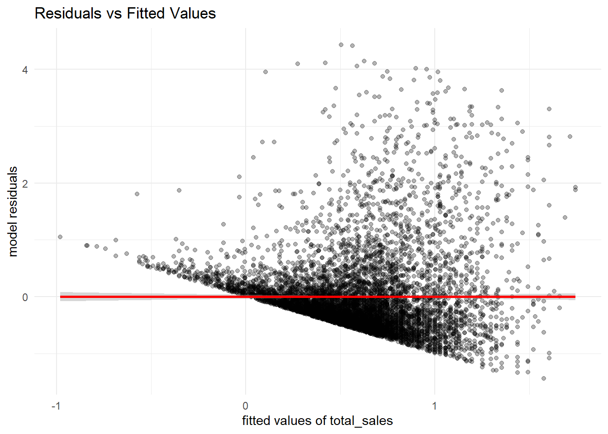

Final Report
11/23/2020
Motivation
Video games have been around for decades, providing entertainment for children and adults alike. They have been involved significantly from the early days of computer games and the early versions of Nintendo and Atari. As technology continues to improve, so do video games. Video game creation has become increasingly complicated, and the cost of creating a game to run one of the major consoles has risen with this greater complexity.
No longer just a niche entertainment medium, gaming has rapidly become the largest sector in terms of production and marketing. In fact, it is larger than the movie and music industry combined, and it is still growing. There are currently more than 2.5 billion gamers across the world. Analysts reported that in 2019, the gaming business was estimated to generate $152.1 billion, in which console was the second fastest-growing gaming platform, only after mobile gaming (source). Since the 2000’s, three major console-developing companies have dominated the console market: Nintendo, Sony, and Microsoft. In this project, we are going to analyze the 2001-2020 global games market per console from these three companies, and learn about the various factors that influence their total revenues.
Initial Questions
In contrast to the questions we initially posed in our proposal, we decided to focus on the three major console developers and factors influencing their total sales. In other words, for games released on consoles developed by Nintendo, Sony, and Microsoft, we want to know separately:
How do the sales of games change over time?
What is the most popular/profitable game genre on each companies’ consoles?
Is there an association between critic scores and game sales? In which direction?
Does the number of consoles the games are released on influence their sales?
Data Collection
We initially proposed to scrape most of our data from all 180 pages of games on Metacritic and merge them with sales data from VGChartz. Metacritic is a well-known review aggregate site and is relatively transparent with its methodology for gathering critic reviews but does not contain information on sales. VGChartz is a video game sales tracking website that provides weekly sales figures of console software and hardware by region. According to their methodology page, they produce their estimates by extrapolating from retail sampling and trends, and regularly compare them to official shipment figures and figures estimated by regional trackers.
In an arduous process of figuring out how to scrape information such as genre that was only listed on the individual detail page of each game and repeatedly running into HTTP connection errors on Metacritic, we found and utilized the polite package to safely scrape the data without overwhelming the website. However, because some pages simply did not exist and we had ~18,000 games to scrape, the entire scraping process took over 24 hours to complete. The sales data from VGChartz was scraped relatively easily without the need of the polite package.
Unfortunately, after merging, our ~18,000 entries were reduced to ~2,500. We then realized that this reduction was because the two sites named many of the game titles slightly differently, and that Metacritic would list different versions of a game as separate entries while VGChartz grouped them together into one, resulting in many games that could not be merged as is. Simply dropping those entries from our dataset would be invalid, but recoding the inconsistencies manually would be entirely too time-consuming, so we decided to obtain our dataset mainly from VGChartz, possibly at the expense of having accurate critic review scores. All of the code we’ve written up to this point can be found in its own folder here.
Thus our final dataset comes mainly from VGChartz, with some critic scores from the dataset mentioned above from Metacritic. Based on the raw dataset, we also created some other new columns.
The key steps for data cleaning are:
Only keep games released on consoles by Nintendo, Sony or Microsoft using
filter;Get
critic_scorefrom the previously scraped Metacritic dataset usingleft_joinbytitleandconsole;Obtain the year the game was released from
release_dateusingseparate;Add a new column,
console_developer, which indicates the developer of the console (Nintendo, Sony, or Microsoft);Add another new column,
n_platforms, which shows the number of consoles the game was released on.
After dropping NAs, there are 7340 rows and 14 columns in our final dataset.
Important variables include:
title: unique title of each gameconsole: platform on which the game was released or is playable (i.e. Switch, PS4, etc.)console_developer: company that produces the consolen_platforms: number of platforms the game was released ongenre: genre of the gamerelease_year: year of the game’s releasecritic_score: aggregate critic review score compiled by VGChartz and Metacritictotal_sale: global revenues (million $) the game earned on that particular console
The first ten rows of the dataset is as follow:
head(games_df) %>%
knitr::kable(format = "html", col.names = colnames(games_df), align="c") %>%
kableExtra::kable_styling("striped", "hover", row_label_position = "c") %>%
kableExtra::scroll_box(width = "100%", height = "200px")| title | console | console_developer | n_platforms | genre | release_year | publisher | developer | critic_score | total_sale | na_sale | pal_sale | japan_sale | other_sale |
|---|---|---|---|---|---|---|---|---|---|---|---|---|---|
| Grand Theft Auto: San Andreas | PlayStation 2 | Sony | 3 | action | 2004 | Rockstar Games | Rockstar North | 9.5 | 20.81 | 9.43 | 0.40 | 0.41 | 10.57 |
| Grand Theft Auto V | PlayStation 3 | Sony | 5 | action | 2013 | Rockstar Games | Rockstar North | 9.4 | 20.32 | 6.37 | 9.85 | 0.99 | 3.12 |
| Grand Theft Auto V | PlayStation 4 | Sony | 5 | action | 2014 | Rockstar Games | Rockstar North | 9.7 | 19.39 | 6.06 | 9.71 | 0.60 | 3.02 |
| Grand Theft Auto: Vice City | PlayStation 2 | Sony | 2 | action | 2002 | Rockstar Games | Rockstar North | 9.6 | 16.15 | 8.41 | 5.49 | 0.47 | 1.78 |
| Grand Theft Auto III | PlayStation 2 | Sony | 2 | action | 2001 | Rockstar Games | DMA Design | 9.5 | 13.10 | 6.99 | 4.51 | 0.30 | 1.30 |
| Grand Theft Auto IV | Xbox 360 | Microsoft | 3 | action | 2008 | Rockstar Games | Rockstar North | 10.0 | 11.09 | 6.80 | 3.11 | 0.14 | 1.04 |
Exploratory Analyses
Global sales and Number of games released across the years
All Consoles
totalsale = games_df %>%
group_by(release_year) %>%
summarize(
totalsale = sum(total_sale)
) %>%
drop_na() %>%
ggplot(aes(x = release_year, y = totalsale)) +
geom_col(color = "purple4", fill = "white") +
labs(x = "Release Year", y = "Total Sale (million USD)")
totalsale_plotly = ggplotly(totalsale)
totalcount = games_df %>%
group_by(release_year) %>%
summarize(
count = n()
) %>%
drop_na() %>%
ggplot(aes(x = release_year, y = count)) +
geom_col(color = "lightseagreen", fill = "white") +
labs(x = "Release Year", y = "Number of Games")
totalcount_plotly = ggplotly(totalcount)
subplot(totalsale_plotly, totalcount_plotly, titleX = TRUE, titleY = TRUE, margin = 0.1)The left bar graph shows the cumulative global revenues (in million USD) of each game by release year from 2001 and 2020 on the three companies’ platforms. In other words, it is showing how much the games made (from its release year to present) by their release year. Note: this graph is NOT showing annual sales of games. The right graph shows the number of video games released on these platforms in the same period.
The video game industry increases at a rapid rate after 2001 with a drastic increase in number of games released each year and the high volume reaches its peak in 2008, with 620 games published on these major platforms. After 2008, both cumulative sales and number of games released decreases over time.
Note that the number of game releases from the three companies in 2019 is only 18 and in 2020 is 5, which is not the case in reality. Therefore, we consider data in 2019 and 2020 to be inaccurate and will exclude them in our statistical analyses.
Nintendo
totalsale = games_df %>%
filter(console_developer == "Nintendo") %>%
group_by(release_year) %>%
summarize(
totalsale = sum(total_sale)
) %>%
drop_na() %>%
ggplot(aes(x = release_year, y = totalsale)) +
geom_col(color = "navyblue", fill = "white") +
labs(x = "Release Year", y = "Total Sale (million USD)")
totalsale_plotly = ggplotly(totalsale)
totalcount = games_df %>%
filter(console_developer == "Nintendo") %>%
group_by(release_year) %>%
summarize(
count = n()
) %>%
drop_na() %>%
ggplot(aes(x = release_year, y = count)) +
geom_col(color = "darkred", fill = "white") +
labs(x = "Release Year", y = "Number of Games")
totalcount_plotly = ggplotly(totalcount)
subplot(totalsale_plotly, totalcount_plotly, titleX = TRUE, titleY = TRUE, margin = 0.1)We can see a similar trend for Nintendo and Microsoft.
Microsoft
totalsale = games_df %>%
filter(console_developer == "Microsoft") %>%
group_by(release_year) %>%
summarize(
totalsale = sum(total_sale)
) %>%
drop_na() %>%
ggplot(aes(x = release_year, y = totalsale)) +
geom_col(color = "navyblue", fill = "white") +
labs(x = "Release Year", y = "Total Sale (million USD)")
totalsale_plotly = ggplotly(totalsale)
totalcount = games_df %>%
filter(console_developer == "Microsoft") %>%
group_by(release_year) %>%
summarize(
count = n()
) %>%
drop_na() %>%
ggplot(aes(x = release_year, y = count)) +
geom_col(color = "darkred", fill = "white") +
labs(x = "Release Year", y = "Number of Games")
totalcount_plotly = ggplotly(totalcount)
subplot(totalsale_plotly, totalcount_plotly, titleX = TRUE, titleY = TRUE, margin = 0.1)We can see a similar trend for Nintendo and Microsoft.
Sony
totalsale = games_df %>%
filter(console_developer == "Sony") %>%
group_by(release_year) %>%
summarize(
totalsale = sum(total_sale)
) %>%
drop_na() %>%
ggplot(aes(x = release_year, y = totalsale)) +
geom_col(color = "navyblue", fill = "white") +
labs(x = "Release Year", y = "Total Sale (million USD)")
totalsale_plotly = ggplotly(totalsale)
totalcount = games_df %>%
filter(console_developer == "Sony") %>%
group_by(release_year) %>%
summarize(
count = n()
) %>%
drop_na() %>%
ggplot(aes(x = release_year, y = count)) +
geom_col(color = "darkred", fill = "white") +
labs(x = "Release Year", y = "Number of Games")
totalcount_plotly = ggplotly(totalcount)
subplot(totalsale_plotly, totalcount_plotly, titleX = TRUE, titleY = TRUE, margin = 0.1)However, for Sony, it’s a different story. Cumulative sales of games released earlier starts high and those released later keeps decreasing.
Global sales of games per genre
genre_sale_plot =
games_df %>%
group_by(genre) %>%
mutate(total = sum(total_sale)) %>%
ungroup() %>%
mutate(
genre = fct_reorder(genre, desc(total))) %>%
group_by(genre, console_developer) %>%
summarise(
sum_sale = sum(total_sale)
) %>%
ggplot(aes(x = genre, y = sum_sale, fill = console_developer)) +
geom_bar(stat = "identity", alpha = .7) +
theme(
axis.text.x = element_text(angle = 70, vjust = 0.5, hjust = 1, size = 8),
legend.position = "bottom",
legend.text = element_text(size = 8)) +
labs(x = "Genre", y = "Total Sale (million USD)", fill = "Developer")
ggplotly(genre_sale_plot) Sports games have been around since the beginning of gaming, and it is the most popular genre, with global sales more than 1.0 billion USD. Coming in second and third respectively are Action and Shooting, challenging the player’s reflexes and coordination.
The revenues of each company, however, are not the same across the genres. * Nintendo earns more profit from making games in sports, role-playing, and platform, with each of them bring back more than 290 million USD.
Sony’s best-selling genre is action, which achieves 580.94 million USD revenue between 2001 to 2020. Sports and shooting also brings huge profits to Sony, with 481.72 and 410.72 million USD, respectively.
Microsoft, despite being the latest competitor to enter the video game industry, performs well in the shooting, sports, and action genres. The company’s highest revenue is from shooting games with 403.39 million USD.
Relationship between critic score and total revenues
games_df %>%
filter(total_sale < 5) %>%
ggplot(aes(x = critic_score, y = total_sale, color = console_developer)) +
geom_point(alpha = 0.2) +
geom_smooth(method = 'lm', se = F) +
labs(x = "Critic Score", y = "Total Sale (million USD)", color = "Console Developer")
Critic consensus on a game usually has some correlation with the success of the game in the market because critic reviews may influence consumers’ decision to buy games.Based on the fitted linear regression lines, it would seem that Microsoft and Sony’s games usually has scores greater than 5/10, which means that their games have overall good quality. While for Nintendo, more of its games earned low scores from critics.
Generally, as critic score increases, sales of games on the three companies’ consoles all increase. What’s interesting is that Sony’s game sale increases more than the others for one unit increase in critic score and Nintendo’s increases the least.
Platform Availability
platform_available =
games_df %>%
mutate(n_platforms = as.factor(n_platforms)) %>%
ggplot(aes(x = n_platforms, y = log(total_sale), fill = console_developer)) +
geom_violin(alpha = .5) +
labs(x = "\nNumber of Platforms", y = "Total Sale Log(million USD)\n") +
theme_light() +
facet_wrap(~console_developer,nrow = 3) +
theme(
text = element_text(size = 9),
legend.text = element_text(size = 9),
axis.title.x = element_text(vjust = -0.5),
axis.title.y = element_text(vjust = 3.5),
legend.position = "none"
)
platform_available
For games of Microsoft and Sony, the sales improves as the number of console increases overall. And this trend is more apparent for Sony. This means that for these two companies, more available games sells better than less available games. However, this is not the case for Nintendo. Even though there are also non-exclusive games on Nintendo’s consoles, they don’t contribute more revenue than games with less platform availability. This is unsurprising as Nintendo is known for their console-exclusive games.
Statistical Analyses
Anova Test
games_df = games_df %>%
filter(release_year < 2019) %>%
mutate(
n_platforms =
case_when(n_platforms == '1' ~ 'small',
n_platforms >= '2' & n_platforms <= '3' ~ 'medium',
n_platforms >= '4' ~ 'large'),
n_platforms = as.factor(n_platforms)
) %>%
dplyr::select(title:genre,critic_score, total_sale)Using Analysis of Variance (ANOVA) we can conduct statistical comparisons among groups of our interested categorical variables: n_platforms. We further divided n_platform into 3 groups: small (n_platforms = 1), medium (2 <= n_platforms <= 3) and large (4 <= n_platforms <= 9).
1. One-way ANOVA: total_sale ~ n_platforms
aov_mod_1 = aov(total_sale ~ n_platforms, data = games_df)broom::tidy(aov_mod_1)## # A tibble: 2 x 6
## term df sumsq meansq statistic p.value
## <chr> <dbl> <dbl> <dbl> <dbl> <dbl>
## 1 n_platforms 2 109. 54.5 13.5 0.00000141
## 2 Residuals 7314 29526. 4.04 NA NAmulti_comp_1 = TukeyHSD(aov_mod_1)
plot(multi_comp_1)
With p.value < 0.001, we conclude that at least two of the n_platforms groups have different average total_sales. Then Tukey’s method was performed to make pairwise comparisons. All comparisons have significant differences in mean of total_sale.
2. Conclusion
The ANOVA test above provides evidence that there are true differences in games sales among different groups of n_platforms. Therefore, we will include console_developer, n_platforms, critic_score as predictors in our linear regression model.
Similarly, we conducted ANOVA test for different levels of genre and concluded that there are true difference in global sales among different genres.
Linear Regression
regression_df =
games_df %>%
filter(total_sale < 5) # cut off outliersBased on the boxplot of total sales, the values of total sales are heavily skewed right. In order to cut off the outliers, the dataset was filtered to only include games with total sales less than 5 million USD. Therefore any values greater than 5 are excluded for linear regression analysis.
1. Build Models
Model 1: \(total\_sale \sim console\_developer * genre + console\_developer * n\_platforms\)
Model 2: \(total\_sale \sim console\_developer * genre + console\_developer * n\_platforms + console\_developer * critic\_score\)
Model 3: \(total\_sale \sim console\_developer * genre + console\_developer * critic\_score\)
Model 4: \(total\_sale \sim console\_developer * n\_platforms + console\_developer * critic\_score\)
Model 2 contains console_developer and all other interested predictors (genre, n_platform, critic_score), as well as interactions. While Model 1, 3, and 4 contain console_developer and only two of interested predictors and their interactions.
2. Cross validation
We use crossv_mc method to create training and testing datasets and fit the above 4 candidate models. The violin plots below shows the distribution of RMSE values for each model:
cv_df %>%
dplyr::select(starts_with("rmse")) %>%
pivot_longer(
everything(),
names_to = "model",
values_to = "rmse",
names_prefix = "rmse_"
) %>%
ggplot(aes(x = model, y = rmse)) +
geom_violin()
Based on the results, Model 2 has the lowest RMSE, but RMSE of Model 3 and 4 are just slightly higher than Model 2, which indicates that there’s minor improvement for adding console_developer*critic_score as an additional predictor. Also, there are 6 subgroups in genre, which makes Model 3 harder to interpret than Model 4. In this way, we decide to select Model 4 as our final model.
3. Diagnosis
In Model 4, we used Residuals vs Fitted Values plot to detect unequal error variance (heteroscedasticity) and outliers.
lm4 = lm(total_sale ~ console_developer*n_platforms + console_developer*critic_score, data = regression_df)
regression_df %>%
add_predictions(lm4) %>%
add_residuals(lm4) %>%
ggplot(aes(x = pred, y = resid))+
geom_point(alpha = 0.3)+
geom_smooth(method = 'lm', color = 'red')+
labs(x = 'fitted values of total_sales', y = 'model residuals', title = 'Residuals vs Fitted Values')
As shown in the graph, there are many outliers with residuals > 3. Although the mean of residual values is close to 0 and residuals have a horizontal relationship with fitted value, the distribution of residual values is skewed. This plot indicates that our model does not have ideally distributed residuals.
4. Results
The summary of the selected model: \(total\_sale \sim console\_developer * n\_platforms + console\_developer * critic\_score\) is as follow:
coe_df = broom::tidy(lm4)
coe_df_tidy =
coe_df %>%
select(term, estimate, p.value) %>%
mutate(
term = str_replace(term, "^console_developer:", "Developer: "),
term = str_replace(term, "^n_platforms:", "Num_Consoles: "),
) %>%
knitr::kable(digits = 3)
coe_df_tidy| term | estimate | p.value |
|---|---|---|
| (Intercept) | -0.801 | 0.000 |
| console_developerNintendo | 0.476 | 0.000 |
| console_developerSony | -0.136 | 0.298 |
| n_platformsmedium | -0.299 | 0.000 |
| n_platformssmall | -0.265 | 0.000 |
| critic_score | 0.228 | 0.000 |
| console_developerNintendo:n_platformsmedium | 0.215 | 0.001 |
| console_developerSony:n_platformsmedium | -0.025 | 0.684 |
| console_developerNintendo:n_platformssmall | 0.313 | 0.000 |
| console_developerSony:n_platformssmall | -0.210 | 0.003 |
| console_developerNintendo:critic_score | -0.107 | 0.000 |
| console_developerSony:critic_score | 0.051 | 0.002 |
According to Model 4, with games on Microsoft consoles and having large console availability as reference, we can see that:
For Microsoft,
While keeping critic score constant, compared to sales of game on large number of consoles, estimated sales decreases 0.299 million USD when games run on medium number of consoles and decreases 0.265 million USD when games run on small number of consoles;
While keeping console availability constant, the estimated total sales increases 0.228 million USD for one unit increase in critic score on average.
For Nintendo,
While keeping critic score constant, compared to sales of Microsoft game with same level of console availability, estimated sales increases 0.476 million USD for Nintendo games with large number of consoles, increases 0.691 million USD for games with medium number of consoles, and increases 0.789 million USD for games with small number of consoles;
Among Nintendo games, while keeping critic score constant, there is supposed to be 0.084 million USD decrease when compared games on medium number of platforms with large number of platforms, and 0.048 million USD increase when compared games on small number of platforms with large number of platforms;
While keeping console availability constant, the estimated total sales increases 0.121 million USD for one unit increase in critic score on average.
For Sony,
While keeping critic score constant, compared to sales of Microsoft game with same level of console availability, estimated sales decreases 0.136 million USD for Sony games with large number of consoles, decreases 0.025 million USD for games with medium number of consoles, and decreases 0.21 million USD for games with small number of consoles;
Among Sony games, while keeping critic score constant, there is supposed to be 0.324 million USD decrease when compared games on medium number of platforms with large number of platforms, and 0.475 million USD increase when compared games on small number of platforms with large number of platforms;
While keeping console availability constant, the estimated total sales increases 0.271 million USD for one unit increase in critic score on average.
Discussion
From the analysis above, 2008 is the year with the highest global revenues and the most games released. In 2008, many popular games with high revenues are released in gaming industry such as Grand Theft Auto IV and Mario Kart Wii. After 2008, both cumulative sales and number of games released decrease possibly due to the effects of the 2008 financial recession and the rise in popularity of PC and mobile gaming as technology advances. Another possible reason for the downfall is that the console makers are not eager to release new models as often and game developers are taking longer to develop games as demands for more effort-intensive features increase, which also decreases the number of games published each year. Furthermore, sales of more recently released games may be lower because they are younger than their predecessors.
After 2012, in general, there is a decrease in both the number of games released and total revenues for the three big companies: Nintendo, Sony, and Microsoft.
Action, sports, and shooting are the most popular genres that bring the most profits to the companies overall. Not particularly surprising.
It seems that as critic scores increase, there is a generally associated increase in global sales as well. Sony is the company in which their games has the highest critic score and highest global sales.
Platform availability refers to the number of consoles that a game is released on, and running more consoles indicates higher availability (e.g. you can play Grand Theft Auto V on PlayStation 4 or on Xbox One). High availability sometimes indicates high popularity, which is supposed to bring in more sales. However, non-exclusive games won’t encourage people to buy certain consoles, since they can play them on consoles they already have. In this way, the sales brought by the game would be “diluted”.
In order to validate the results of our main findings, an ANOVA test and linear regression are performed. Our statistical analyses confirmed that the critic scores and the number of available platforms per game play a role in influencing the global revenues of each game.
- Better critic scores imply higher game’s sales on average.
- Games released on higher number of platforms tend to have better sales than the games released on lower number of platforms.
There are many limitations to our analyses. First of all, the regression model only includes games with total sale less than 5 million USD and omits those high-earning games that would be significant outliers in the linear regression model. Ideally, we would like to include all games. Also, we built models by hypothesis instead of performing a model selection procedure such as a stepwise method to find the “best” model. The resulting model does not have an ideal distribution of residuals, and the r.square is quite low as well, which indicates that the model should be improved. We also find it difficult to interpret a large model containing all variables since there are too many categorical variables to consider.
Interactive Map
1. Top 10 best-selling video games
Video game preferences tend to shift regularly, but a look at the graph of the top 10 best-selling games of the last 19 years shows how loyal players have remained to some of the industry’s biggest franchises. The bar graph shows the top 10 best-selling video games based on the selection of console developer, genre, and release year range. Overall, from 2001 to 2020, Nintendo holds the top place of total revenues with Wii Sports, dominating the chart with sales of more than 80 million USD.
2. Distribution of total sales by console
The second chart is a boxplot showing the distribution of total sales by console. Regardless of console developer, genre, and release year range, the second chart implies that the distribution of total sales is actually very skewed (appearing normal due to a log transformation) by some extremely high-earning games, with centers at around 0.5 million USD or 500,000 USD.
3. Total sales by release year
The third chart gives the total sales by games’ release year. The highest total sales by release year occur in 2008.